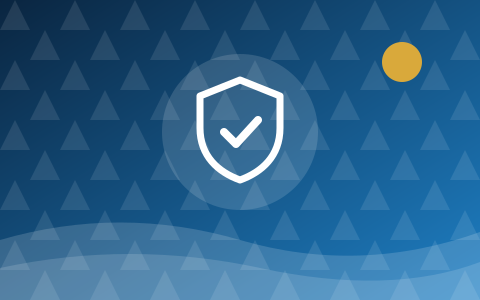
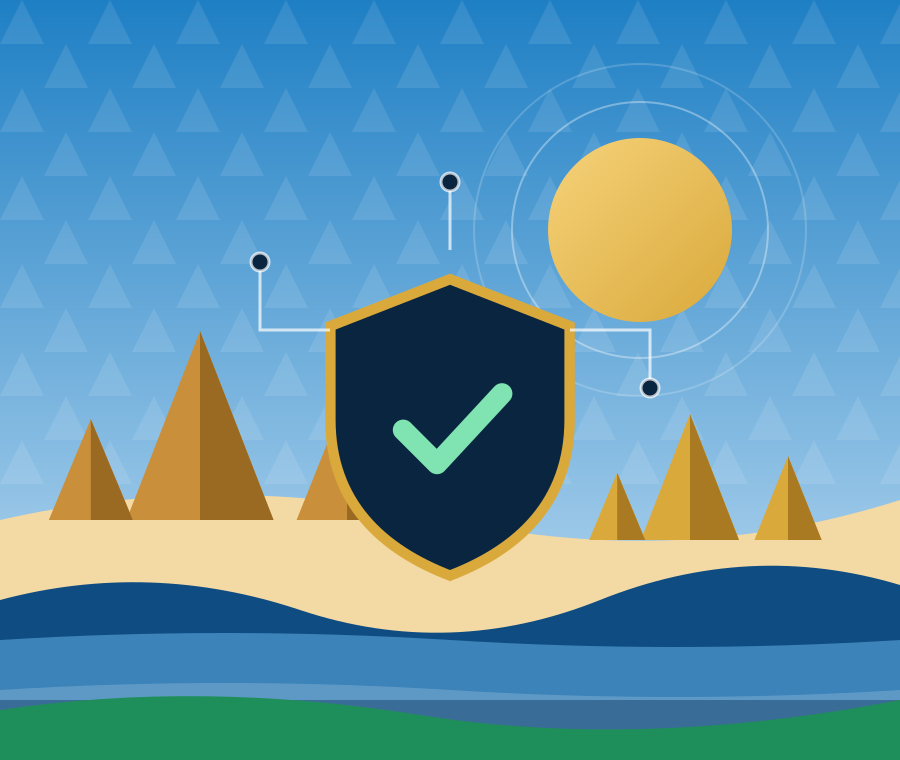
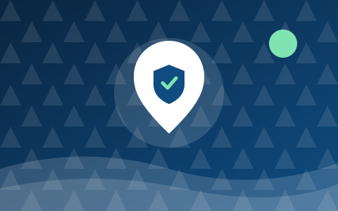
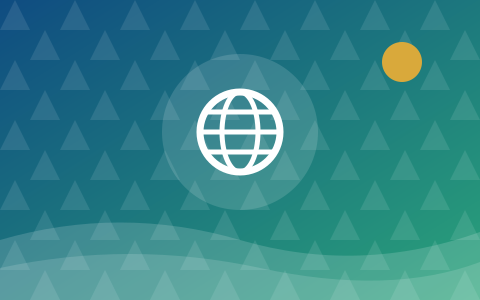
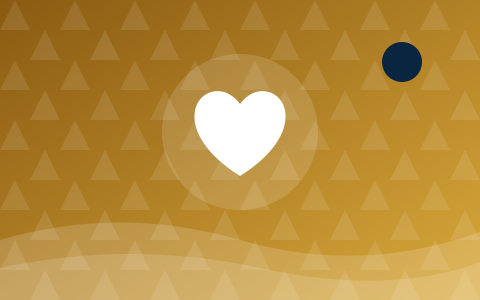
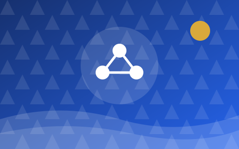

حماية المؤسسات رقميًا
نقدّم خدمات أمن سيبراني احترافية تحمي الشركات والمؤسسات داخل السودان وخارجه من التهديدات المتطورة.
البيت السيبراني السوداني هو بيت خبرة متخصص في اختبار الاختراق، الاستجابة للحوادث، والمراقبة الأمنية المستمرة — نحمي مؤسستك بمعايير عالمية وفريق سوداني محترف.

البيت السيبراني السوداني (SCH) شركة خاصة مستقلة، غير حكومية وغير تابعة لأي وزارة أو مؤسسة رسمية، تأسست لتقديم خدمات أمن سيبراني احترافية للمؤسسات والشركات داخل السودان وخارجه. نجمع بين الخبرة التقنية العميقة والفهم المحلي لنبني دفاعات رقمية موثوقة.
اقرأ المزيد عن الشركة
ستة أهداف توجّه عملنا: حماية المؤسسات، ونشر الوعي، وبناء الكفاءات، ودعم المجتمع.

نقدّم خدمات أمن سيبراني احترافية تحمي الشركات والمؤسسات داخل السودان وخارجه من التهديدات المتطورة.

نرفع وعي الأفراد والمؤسسات بالتصيّد والهندسة الاجتماعية وحماية الحسابات والبيانات.
ندرّب الكوادر السودانية ونبني جيلًا من المتخصصين في الأمن السيبراني.

نخصّص 30% من أرباحنا لمبادرات من أجل سودان أفضل: التعليم والتقنية والشباب والوعي الرقمي.
نجمع بين الفهم المحلي العميق والخبرة التقنية لنبني دفاعات رقمية يمكن الوثوق بها.

نعمل وفق أفضل الممارسات الدولية ونربط السوق السوداني بالمعرفة والفرص العالمية.
من اختبار الاختراق إلى الاستجابة للحوادث، نقدم مجموعة متكاملة من الخدمات المصممة وفق احتياجات مؤسستك.
تحليل الأدلة الرقمية بعد الحوادث لكشف أسباب الاختراق ومسار المهاجم.
اعرف المزيدفريق جاهز على مدار الساعة لاحتواء الحوادث الأمنية والحد من أضرارها فورًا.
اعرف المزيدمراقبة مستمرة على مدار الساعة لأنظمتك لرصد التهديدات والتعامل معها فورًا.
اعرف المزيدمراجعة شاملة للسياسات والأنظمة للتأكد من التوافق مع أفضل الممارسات العالمية.
اعرف المزيدنجمع بين فهمنا العميق للبيئة الرقمية السودانية والإقليمية، وبين أفضل الممارسات والمعايير العالمية في الأمن السيبراني.
خبراء أمن سيبراني بخبرة عملية في اختبار الاختراق والاستجابة للحوادث.
نتعامل مع بيانات عملائنا بأعلى درجات الخصوصية والالتزام الأخلاقي.
فريق جاهز للتحرك الفوري عند وقوع أي حادث أمني، على مدار الساعة.
حماية المؤسسات والأفراد رقميًا من خلال حلول أمن سيبراني موثوقة، مبنية على الخبرة والاحترافية.
أن نكون البيت السيبراني الأول والمرجع الموثوق للأمن الرقمي في السودان والمنطقة.
النزاهة، الشفافية، الاحترافية، والالتزام المستمر بأعلى معايير الأمان والسلام الرقمي.
لا. البيت السيبراني السوداني شركة خاصة مستقلة تمامًا، وليست تابعة لأي وزارة أو مؤسسة حكومية.
تختلف المدة حسب نطاق المشروع، لكنها تتراوح غالبًا بين أسبوع إلى ثلاثة أسابيع، مع تقرير مفصل في النهاية.
نعم، نقدم خدماتنا عن بعد وفي الموقع لمؤسسات إقليمية ودولية حسب طبيعة المشروع.
نلتزم باتفاقيات عدم إفشاء (NDA) مع كل عميل، ونطبق سياسات صارمة للتعامل مع البيانات الحساسة.
تواصل مع فريقنا اليوم لبدء تقييم أمني شامل لمؤسستك، أو لمناقشة احتياجاتك الخاصة.